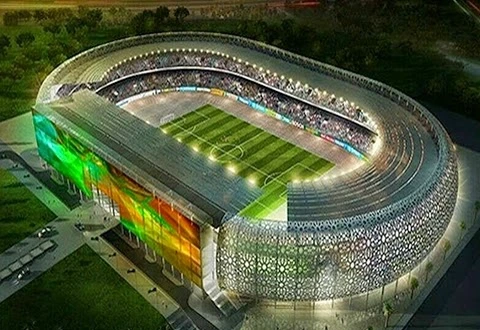

Unity Park
Ikot Ekpene Road, Essien Udim, AKS
A serene environment great for family picnics, cultural shows, and public relaxation.
Essien Udim Library
Main Street, Afaha Ikot Ebak, AKS
Offers extensive educational and historical resources about the area.
Ekpeyong Atai Market
 Central Essien Udim, AKS
Central Essien Udim, AKS
One of the oldest markets showcasing local produce, crafts, and heritage.
Midim Hills
Midim Atan, Essien Udim, AKS
A picturesque landscape perfect for hiking and exploration.
Akwa Ibom Tech Hub
 Innovation Close, Essien Udim
Innovation Close, Essien Udim
A modern facility encouraging youth and tech development in the region.
Essien Cultural Centre
Old Barracks Road, Essien Udim
Hosts festivals, arts exhibitions and promotes local traditions.
Urua Akpan Square
Akpan Way, Essien Udim
Center of local commerce, a vibrant area with shops, vendors and culture.
Essien Udim Stadium

Sport Avenue, Uyo
Hosts football matches, athletics, and other public gatherings.